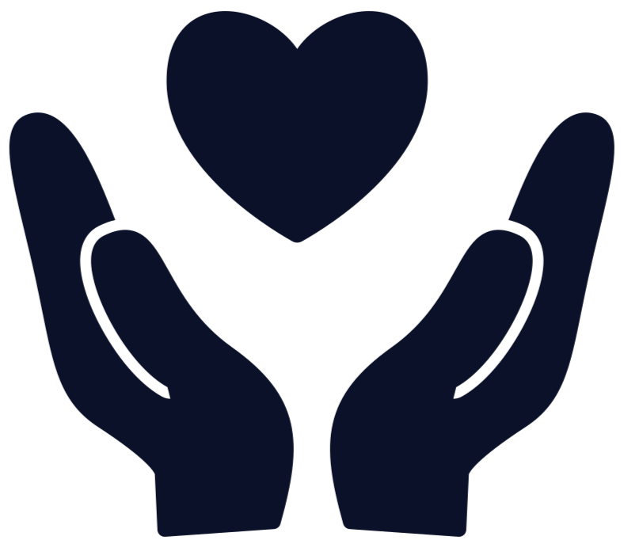
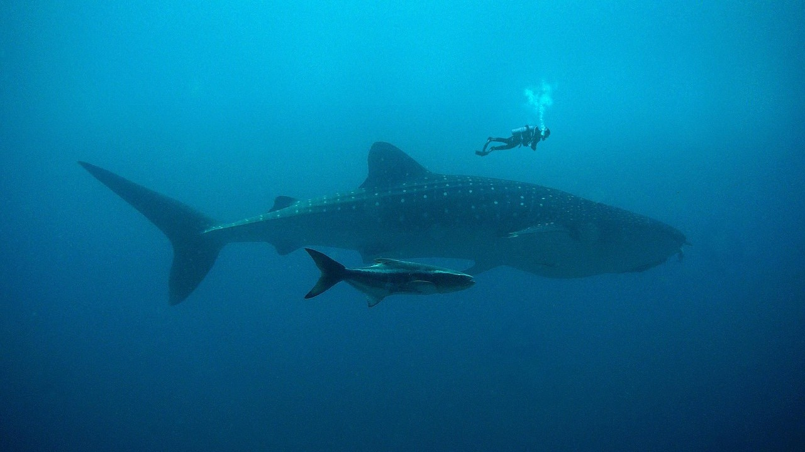
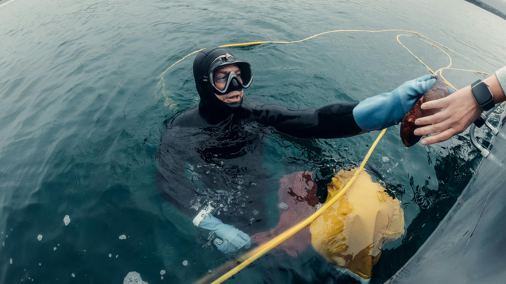
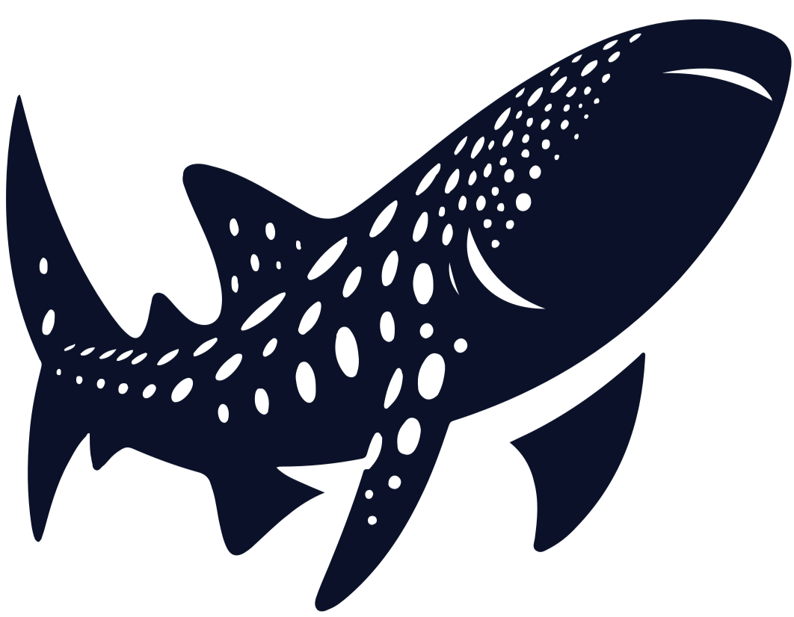

Make a donation
Proceeds go towards habitat protection, research programs, educational events, and other conservation efforts. Every donation helps, big or small!
DonateA non-profit dedicated to the conservation of one of the ocean's most peaceful, majestic, and vulnerable creatures. With your help, our team hopes to protect whale sharks from the threat of extinction.
Along with being the largest species of shark, whale sharks are also the largest fish currently inhabiting our oceans. However, despite their size, these sharks are known for their peaceful nature which is why they are often called the "gentle giants" of the ocean. They are filter feeders that eat small fish, especially plankton, and they are usually found swimming close to the surface in tropical oceans.
Learn More

Since 2016, these majestic creatures have been considered an endangered species because they have experienced a decline of over 50% in their population. Fishing, hunting, and disruptive tourism practices are currently the biggest threat to whale sharks.
From the beginning, the goal of "The Gentle Giants Project" has been to protect whale sharks from further population decline while raising awareness and understanding of these beautiful creatures. With your support, we hope to one day help bring whale sharks out of the endangered species category.
Learn More
There are multiple ways to support The Gentle Giants Project, because we want anyone to be able to join in on protecting whale sharks!

Proceeds go towards habitat protection, research programs, educational events, and other conservation efforts. Every donation helps, big or small!
Donate
Support your own whale shark through our adoption program! You receive an adoption certificate along with regular updates from our research team on your whale shark.
AdoptEvery year we host several educational and fundraising events aimed at spreading awareness for whale sharks and the threats they face. Check back regularly to discover our new events!
Find an Event